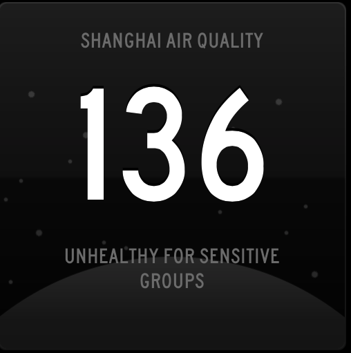

China Air Quality widgets for Panic's Status Board app.
Created by Matt Mayer from ReignDesign, a Shanghai-based mobile development studio.
Data is sourced from Aengus Walton's Air Quality project, which in turns scrapes its data from the US Consulates in Shanghai and Beijing.
